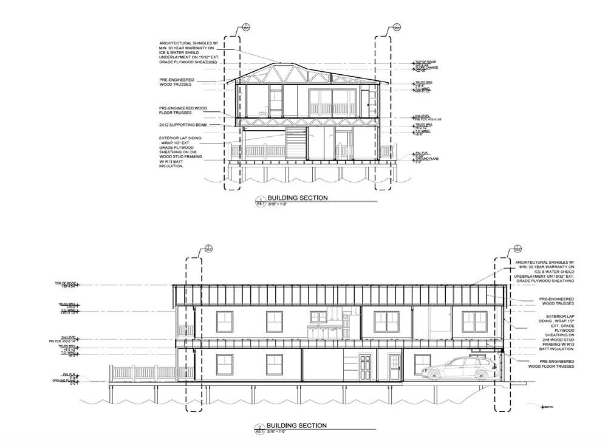
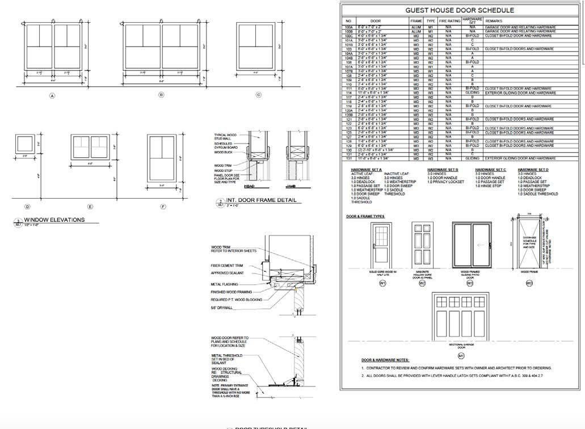
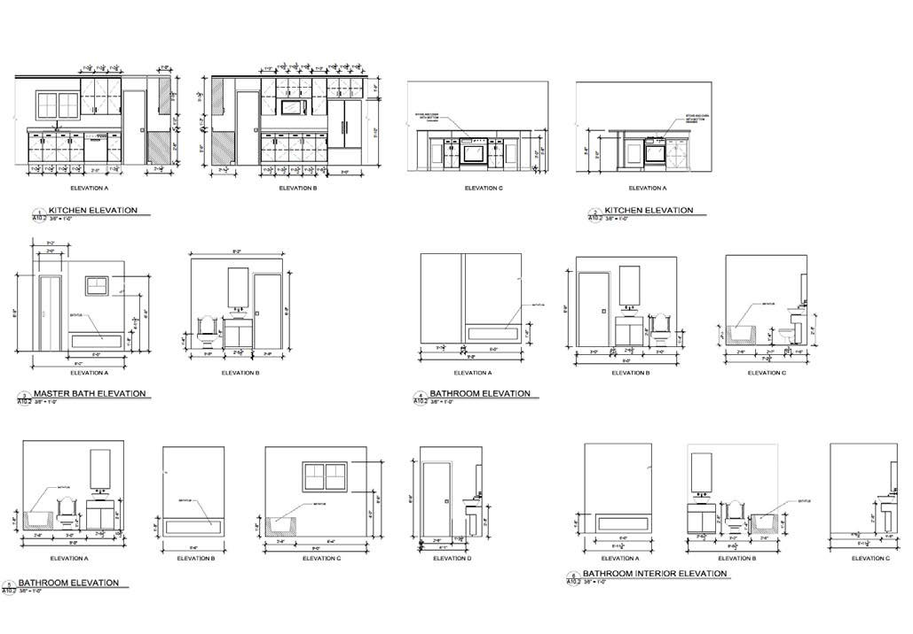

Big Deck House

- Role
- Architectural Intern
- Office
- Powell Studio Architecture, Clermont, Florida
- Location
- Central Florida
- Year
- Summer 2018
One house, one summer: every drawing in the set.
Throughout the summer of 2018 I worked on a single house for a client, built on an existing dock on a lake. Working to the client's exacting standards, I produced the plans, elevations, sections and details for the project.

